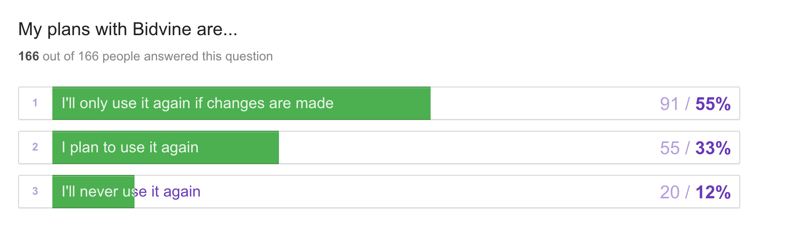

I was with Bidvine for the fall 2018 term, in which I was responsible for creating consistency around the website, helping design/research new features and measure the impact of these new features through testing. I specifically worked on creating a UI kit, reworking our onboarding process, changing the layout of our website, designs for a feature named premium, and user studies to increase user retention.
Web and Mobile (iOS and Android)
Sketch, Adobe Creative Suite, inVision, Zeplin, Typeform and Abstract
2 months
User Survey, User Research, Wireframing, Mockups, Prototypes, UI Designs, A/B Testing
After learning about the habit/aha moment we decided to try to single out our aha moment in order to increase user retention and reduce churn. We noticed after week X user churn rate was increasingly high, so there seemed to be some long-term problem we were facing. Ultimately, it came down to a number of reasons but we decided to start with the onboarding experience.
I first then created a user survey to send out to churned pros who haven't been active on the site for over 1 month to get a better gauge on why certain users were churning. I decided to use a max-diff question to really root out the problem, and then later fact check the answers provided by users with our collected data using Metabase.
What I concluded from the user survey was two things: at Bidvine the way our payment and billing is setup leads to a double negative experience, and users don't have a strong enough profile to create an impact which in return will allow them to see results. The double negative experience lead to another project I worked on after this one. Our results from the survey displayed many problems that the users were facing but when we look at the data we had it showed that users didn't actually face those problems. After filtering these responses, we decided that users were being thrown into a platform without a foundation.
Currently we had a survey/form with several steps to onboard users,a few screens are shown below:
The newly designed onboarding process would be more informative about our website structure, enable better retention due to the user reaching success faster on our platform and ultimately generate more revenue. We had to experiment with different lengths of the onboarding and certain elements. For instance, when conducting our A/B testing we realized the step allowing users to pick which service they wanted to setup first led to fewer completion rates than guiding them through service setup. The company is still working on different iterations of the onboarding, but we have successfully been able to get 73% of users to make a purchase after completing onboarding. As well, retention of users is looking to slowly climb but as I left the company recently I will not be able to report back on this metric.
Below are some screens of the new onboarding:
Sketch, Abstract and Icons provided from icons8
The design system was outdated when I first arrived at Bidvine. The process seems tedious and felt like there could be a faster way of accomplishing design tasks, thus I came about creating a Sketch Library File that would be shared across all files acting as a UI Kit.
It could be easily implemented as we use Abstract to version control and manage all our sketch files. The UI Kit was very specific and detailed as I saw many inconsistencies within the website when I first boarded. I created several boards specific to certain design elements including typography, buttons, alerts, colors, avatars, completion states, modals, cards, margin & padding, Android/iOS elements, icons, input forms, and navigation.
Not only would it speed up the design process, more importantly, but it also created consistency of the UI throughout the website.
Over the course of the term, I was able to work on multiple big projects, I've outlined the two that I believed created the most impact. If you're interested in my other work at Bidvine, feel free to reach out to me!